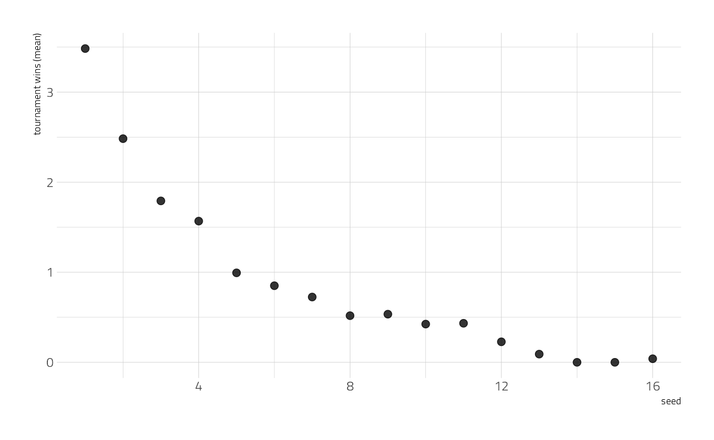
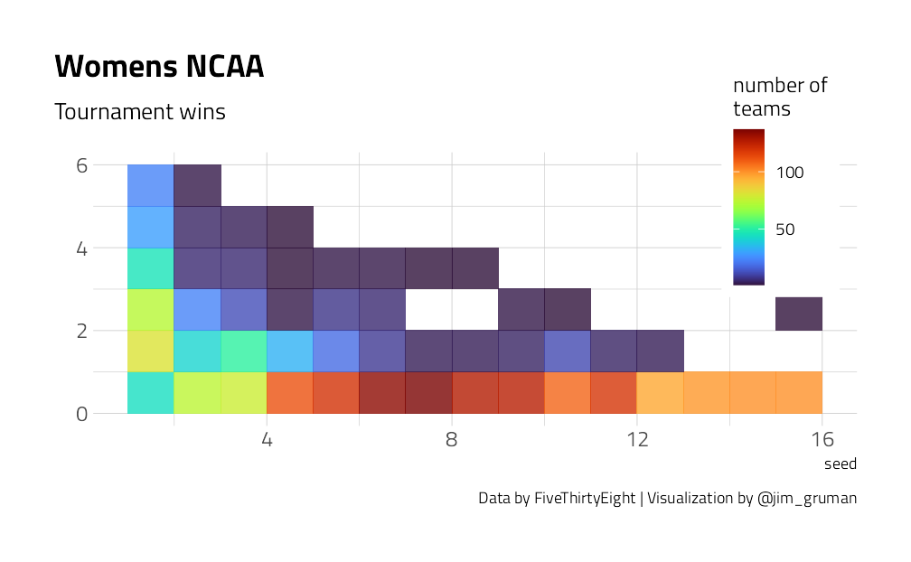
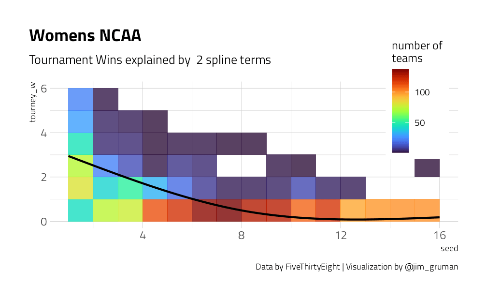
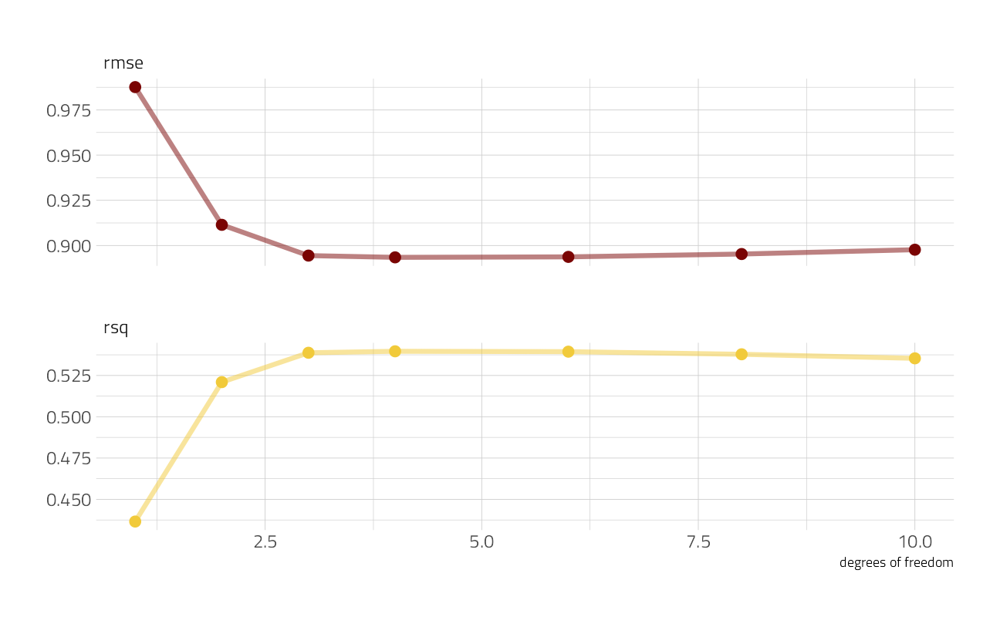

Last updated: 2021-09-09
Checks: 7 0
Knit directory: myTidyTuesday/
This reproducible R Markdown analysis was created with workflowr (version 1.6.2). The Checks tab describes the reproducibility checks that were applied when the results were created. The Past versions tab lists the development history.
Great! Since the R Markdown file has been committed to the Git repository, you know the exact version of the code that produced these results.
Great job! The global environment was empty. Objects defined in the global environment can affect the analysis in your R Markdown file in unknown ways. For reproduciblity it’s best to always run the code in an empty environment.
The command set.seed(20210907) was run prior to running the code in the R Markdown file. Setting a seed ensures that any results that rely on randomness, e.g. subsampling or permutations, are reproducible.
Great job! Recording the operating system, R version, and package versions is critical for reproducibility.
Nice! There were no cached chunks for this analysis, so you can be confident that you successfully produced the results during this run.
Great job! Using relative paths to the files within your workflowr project makes it easier to run your code on other machines.
Great! You are using Git for version control. Tracking code development and connecting the code version to the results is critical for reproducibility.
The results in this page were generated with repository version 7287519. See the Past versions tab to see a history of the changes made to the R Markdown and HTML files.
Note that you need to be careful to ensure that all relevant files for the analysis have been committed to Git prior to generating the results (you can use wflow_publish or wflow_git_commit). workflowr only checks the R Markdown file, but you know if there are other scripts or data files that it depends on. Below is the status of the Git repository when the results were generated:
Ignored files:
Ignored: .Rhistory
Ignored: .Rproj.user/
Ignored: catboost_info/
Ignored: data/2021-09-08/
Ignored: data/acs_poverty.rds
Ignored: data/hike_data.rds
Ignored: data/us_states.rds
Ignored: data/weatherstats_toronto_daily.csv
Unstaged changes:
Modified: code/_common.R
Note that any generated files, e.g. HTML, png, CSS, etc., are not included in this status report because it is ok for generated content to have uncommitted changes.
These are the previous versions of the repository in which changes were made to the R Markdown (analysis/NCAAWomensTournament.Rmd) and HTML (docs/NCAAWomensTournament.html) files. If you’ve configured a remote Git repository (see ?wflow_git_remote), click on the hyperlinks in the table below to view the files as they were in that past version.
| File | Version | Author | Date | Message |
|---|---|---|---|---|
| Rmd | 7287519 | opus1993 | 2021-09-09 | change to emojifont package |
Adapted from NCAA Tuning by Julia Silge @JuliaSilge
This example walks through how to tune and choose hyperparameters using this week‚Äôs #TidyTuesday dataset on NCAA women‚Äôs basketball tournaments. üèÄ
Our modeling goal is to estimate the relationship of expected tournament wins by seed from this week’s #TidyTuesday dataset. This is similar to the “average” column in the FiveThirtyEight table in this article.
Let’s start by reading in the data.
suppressPackageStartupMessages({
library(tidyverse)
library(tidymodels)
library(splines)
})
source(here::here("code","_common.R"),
verbose = FALSE,
local = knitr::knit_global())
ggplot2::theme_set(theme_jim(base_size = 12))
tt <- tidytuesdayR::tt_load("2020-10-06")--- Compiling #TidyTuesday Information for 2020-10-06 ------- There is 1 file available ------ Starting Download ---
Downloading file 1 of 1: `tournament.csv`--- Download complete ---tournament <- tt$tournamentWe can look at the mean wins by seed.
tournament %>%
group_by(seed) %>%
summarise(
exp_wins = mean(tourney_w, na.rm = TRUE),
.groups = "drop"
) %>%
ggplot(aes(seed, exp_wins)) +
geom_point(alpha = 0.8, size = 3) +
labs(y = "tournament wins (mean)")
Let’s visualize all the tournament results, not just the averages.
tournament %>%
filter(!is.na(seed)) %>%
ggplot(aes(seed, tourney_w)) +
geom_bin2d(binwidth = c(1, 1), alpha = 0.8) +
labs(
fill = "number of\nteams", y = "",
subtitle = "Tournament wins",
title = "Womens NCAA",
caption = "Data by FiveThirtyEight | Visualization by @jim_gruman"
) +
theme(
legend.position = c(0.9, 0.9),
legend.background = element_rect(color = "white")
)
We have a lot of options to deal with data like this (curvy, integers, all greater than zero) but one straightforward option is splines. Splines aren’t perfect for this because they aren’t constrained to stay greater than zero or to always decrease, but they work pretty well and can be used in lots of situations. We have to choose the degrees of freedom for the splines.
plot_smoother <- function(deg_free) {
p <- ggplot(tournament, aes(seed, tourney_w)) +
geom_bin2d(binwidth = c(1, 1), alpha = 0.8) +
geom_smooth(
method = lm, se = FALSE, color = "black",
formula = y ~ ns(x, df = deg_free)
) +
labs(
fill = "number of\nteams",
title = "Womens NCAA",
caption = "Data by FiveThirtyEight | Visualization by @jim_gruman",
subtitle = paste("Tournament Wins explained by ", deg_free, "spline terms")
) +
theme(
legend.position = c(0.9, 0.9),
legend.background = element_rect(color = "white")
)
print(p)
}
walk(c(2, 4, 6, 8, 10, 15), plot_smoother)
As the number of degrees of freedom goes up, the curves get more wiggly. This would allow the model to fit a more complex relationship, perhaps too much so. We can tune this hyperparameter to find the best value.
We can start by loading the tidymodels metapackage, and splitting our data into training and testing sets.
set.seed(123)
tourney_split <- tournament %>%
filter(!is.na(seed)) %>%
initial_split(strata = seed)
tourney_train <- training(tourney_split)
tourney_test <- testing(tourney_split)We are going to use resampling to evaluate model performance. A bootstrap sample is a sample that is the same size as the original data set that is made using replacement. This results in analysis samples that have multiple replicates of some of the original rows of the data.
set.seed(234)
tourney_folds <- bootstraps(tourney_train)
tourney_folds# Bootstrap sampling
# A tibble: 25 x 2
splits id
<list> <chr>
1 <split [1561/545]> Bootstrap01
2 <split [1561/585]> Bootstrap02
3 <split [1561/595]> Bootstrap03
4 <split [1561/580]> Bootstrap04
5 <split [1561/578]> Bootstrap05
6 <split [1561/594]> Bootstrap06
7 <split [1561/567]> Bootstrap07
8 <split [1561/570]> Bootstrap08
9 <split [1561/597]> Bootstrap09
10 <split [1561/575]> Bootstrap10
# ... with 15 more rowsNext we build a recipe for data preprocessing. It only has one step!
First, we must tell the recipe() what our model is going to be (using a formula here) and what our training data is.
For our first and only step, we create new spline terms from the original seed variable. We don’t know what the best value for the degrees of freedom is, so we will tune() it. We can set an id value for the tuneable parameter to more easily keep track of it, if we want.
The object tourney_rec is a recipe that has not been trained on data yet, and in fact, we can’t do this because we haven’t decided on a value for deg_free.
tourney_rec <- recipe(tourney_w ~ seed, data = tourney_train) %>%
step_ns(seed, deg_free = tune("seed_splines"))
tourney_recData Recipe
Inputs:
role #variables
outcome 1
predictor 1
Operations:
Natural Splines on seedNext, let’s create a model specification for a linear regression model, and the combine the recipe and model together in a workflow.
lm_spec <- linear_reg() %>% set_engine("lm")
tourney_wf <- workflow() %>%
add_recipe(tourney_rec) %>%
add_model(lm_spec)
tourney_wf== Workflow ====================================================================
Preprocessor: Recipe
Model: linear_reg()
-- Preprocessor ----------------------------------------------------------------
1 Recipe Step
* step_ns()
-- Model -----------------------------------------------------------------------
Linear Regression Model Specification (regression)
Computational engine: lm This workflow is almost ready to go, but we need to decide what values to try for the splines. There are several different ways to create tuning grids, but if the grid you need is very simple, you might prefer to create it by hand.
spline_grid <- tibble(seed_splines = c(1:4, 6, 8, 10))
spline_grid %>%
knitr::kable(align = "l")| seed_splines |
|---|
| 1 |
| 2 |
| 3 |
| 4 |
| 6 |
| 8 |
| 10 |
Now we can put this all together! When we use tune_grid(), we will fit each of the options in the grid to each of the resamples.
all_cores <- parallelly::availableCores(omit = 1)
all_coressystem
11 future::plan("multisession", workers = all_cores) # on Windows
save_preds <- control_grid(save_pred = TRUE)
spline_rs <-
tune_grid(
tourney_wf,
resamples = tourney_folds,
grid = spline_grid,
control = save_preds
)
spline_rs# Tuning results
# Bootstrap sampling
# A tibble: 25 x 5
splits id .metrics .notes .predictions
<list> <chr> <list> <list> <list>
1 <split [1561/545]> Bootstrap01 <tibble [14 x 5]> <tibble [0 x 1]> <tibble [3,~
2 <split [1561/585]> Bootstrap02 <tibble [14 x 5]> <tibble [0 x 1]> <tibble [4,~
3 <split [1561/595]> Bootstrap03 <tibble [14 x 5]> <tibble [0 x 1]> <tibble [4,~
4 <split [1561/580]> Bootstrap04 <tibble [14 x 5]> <tibble [0 x 1]> <tibble [4,~
5 <split [1561/578]> Bootstrap05 <tibble [14 x 5]> <tibble [0 x 1]> <tibble [4,~
6 <split [1561/594]> Bootstrap06 <tibble [14 x 5]> <tibble [0 x 1]> <tibble [4,~
7 <split [1561/567]> Bootstrap07 <tibble [14 x 5]> <tibble [0 x 1]> <tibble [3,~
8 <split [1561/570]> Bootstrap08 <tibble [14 x 5]> <tibble [0 x 1]> <tibble [3,~
9 <split [1561/597]> Bootstrap09 <tibble [14 x 5]> <tibble [0 x 1]> <tibble [4,~
10 <split [1561/575]> Bootstrap10 <tibble [14 x 5]> <tibble [0 x 1]> <tibble [4,~
# ... with 15 more rowsWe have now fit each of our candidate set of spline features to our resampled training set!
Now let’s check out how we did.
collect_metrics(spline_rs) %>%
knitr::kable()| seed_splines | .metric | .estimator | mean | n | std_err | .config |
|---|---|---|---|---|---|---|
| 1 | rmse | standard | 0.9876010 | 25 | 0.0057964 | Preprocessor1_Model1 |
| 1 | rsq | standard | 0.4365488 | 25 | 0.0037990 | Preprocessor1_Model1 |
| 2 | rmse | standard | 0.9114383 | 25 | 0.0060283 | Preprocessor2_Model1 |
| 2 | rsq | standard | 0.5209721 | 25 | 0.0052959 | Preprocessor2_Model1 |
| 3 | rmse | standard | 0.8944212 | 25 | 0.0062435 | Preprocessor3_Model1 |
| 3 | rsq | standard | 0.5387421 | 25 | 0.0056062 | Preprocessor3_Model1 |
| 4 | rmse | standard | 0.8934482 | 25 | 0.0063220 | Preprocessor4_Model1 |
| 4 | rsq | standard | 0.5396353 | 25 | 0.0056399 | Preprocessor4_Model1 |
| 6 | rmse | standard | 0.8937110 | 25 | 0.0063760 | Preprocessor5_Model1 |
| 6 | rsq | standard | 0.5394114 | 25 | 0.0057790 | Preprocessor5_Model1 |
| 8 | rmse | standard | 0.8952845 | 25 | 0.0063011 | Preprocessor6_Model1 |
| 8 | rsq | standard | 0.5378269 | 25 | 0.0059841 | Preprocessor6_Model1 |
| 10 | rmse | standard | 0.8976755 | 25 | 0.0059911 | Preprocessor7_Model1 |
| 10 | rsq | standard | 0.5353777 | 25 | 0.0058777 | Preprocessor7_Model1 |
Looks like the model got better and better as we added more degrees of freedom, which isn’t too shocking. In what way did it change?
collect_metrics(spline_rs) %>%
ggplot(aes(seed_splines, mean, color = .metric)) +
geom_line(size = 1.5, alpha = 0.5) +
geom_point(size = 3) +
facet_wrap(~.metric, ncol = 1, scales = "free_y") +
labs(x = "degrees of freedom", y = NULL) +
theme(legend.position = "none")
The model improved a lot as we increased the degrees of freedom at the beginning, but then continuing to add more didn’t make much difference. We could choose the numerically optimal hyperparameter with select_best() but that would choose a more wiggly, complex model than we probably want. We can choose a simpler model that performs well, within some limits around the numerically optimal result. We could choose either by percent loss in performance or within one standard error in performance.
select_by_pct_loss(spline_rs,
metric = "rmse",
limit = 5,
seed_splines
) %>%
knitr::kable()| seed_splines | .metric | .estimator | mean | n | std_err | .config | .best | .loss |
|---|---|---|---|---|---|---|---|---|
| 2 | rmse | standard | 0.9114383 | 25 | 0.0060283 | Preprocessor2_Model1 | 0.8934482 | 2.013561 |
select_by_one_std_err(spline_rs,
metric = "rmse",
seed_splines
) %>%
knitr::kable()| seed_splines | .metric | .estimator | mean | n | std_err | .config | .best | .bound |
|---|---|---|---|---|---|---|---|---|
| 3 | rmse | standard | 0.8944212 | 25 | 0.0062435 | Preprocessor3_Model1 | 0.8934482 | 0.8997702 |
Looks like 2 or 3 degrees of freedom is a good option. Let’s go with 3, and update our tuneable workflow with this information and then fit it to our training data.
final_wf <- finalize_workflow(tourney_wf, tibble(seed_splines = 3))
tourney_fit <- fit(final_wf, tourney_train)
tourney_fit== Workflow [trained] ==========================================================
Preprocessor: Recipe
Model: linear_reg()
-- Preprocessor ----------------------------------------------------------------
1 Recipe Step
* step_ns()
-- Model -----------------------------------------------------------------------
Call:
stats::lm(formula = ..y ~ ., data = data)
Coefficients:
(Intercept) seed_ns_1 seed_ns_2 seed_ns_3
3.234 -1.886 -5.445 -1.858 We can predict from this fitted workflow. For example, we can predict on the testing data and compute model performance.
tourney_test %>%
bind_cols(predict(tourney_fit, tourney_test)) %>%
metrics(tourney_w, .pred) %>%
knitr::kable(align = "l")| .metric | .estimator | .estimate |
|---|---|---|
| rmse | standard | 0.8302226 |
| rsq | standard | 0.5874205 |
| mae | standard | 0.5971794 |
Pretty good! We can also predict on other kinds of new data. For example, let’s recreate the “average” column in the FiveThirtyEight table on expected wins.
predict(tourney_fit, new_data = tibble(seed = 1:16)) %>%
knitr::kable()| .pred |
|---|
| 3.2335079 |
| 2.6044101 |
| 2.0111317 |
| 1.4894923 |
| 1.0753114 |
| 0.7929041 |
| 0.6205691 |
| 0.5251009 |
| 0.4732938 |
| 0.4319423 |
| 0.3740070 |
| 0.2971133 |
| 0.2050530 |
| 0.1016177 |
| -0.0094010 |
| -0.1242113 |
It’s close! This isn’t a huge surprise, since we’re fitting curves to data in a straightforward way here, but it’s still good to see. You can also see why splines aren’t perfect for this task, because the prediction isn’t constrained to positive values.
sessionInfo()R version 4.1.1 (2021-08-10)
Platform: x86_64-w64-mingw32/x64 (64-bit)
Running under: Windows 10 x64 (build 19043)
Matrix products: default
locale:
[1] LC_COLLATE=English_United States.1252
[2] LC_CTYPE=English_United States.1252
[3] LC_MONETARY=English_United States.1252
[4] LC_NUMERIC=C
[5] LC_TIME=English_United States.1252
attached base packages:
[1] splines stats graphics grDevices utils datasets methods
[8] base
other attached packages:
[1] vctrs_0.3.8 rlang_0.4.11 yardstick_0.0.8 workflowsets_0.1.0
[5] workflows_0.2.3 tune_0.1.6 rsample_0.1.0 recipes_0.1.16
[9] parsnip_0.1.7.900 modeldata_0.1.1 infer_1.0.0 dials_0.0.9.9000
[13] scales_1.1.1 broom_0.7.9 tidymodels_0.1.3 forcats_0.5.1
[17] stringr_1.4.0 dplyr_1.0.7 purrr_0.3.4 readr_2.0.1
[21] tidyr_1.1.3 tibble_3.1.4 ggplot2_3.3.5 tidyverse_1.3.1
[25] workflowr_1.6.2
loaded via a namespace (and not attached):
[1] readxl_1.3.1 backports_1.2.1 systemfonts_1.0.2
[4] plyr_1.8.6 selectr_0.4-2 tidytuesdayR_1.0.1
[7] listenv_0.8.0 usethis_2.0.1 digest_0.6.27
[10] foreach_1.5.1 htmltools_0.5.2 viridis_0.6.1
[13] fansi_0.5.0 magrittr_2.0.1 tzdb_0.1.2
[16] globals_0.14.0 modelr_0.1.8 gower_0.2.2
[19] extrafont_0.17 R.utils_2.10.1 vroom_1.5.4
[22] sysfonts_0.8.5 extrafontdb_1.0 hardhat_0.1.6
[25] colorspace_2.0-2 rvest_1.0.1 textshaping_0.3.5
[28] haven_2.4.3 xfun_0.25 crayon_1.4.1
[31] jsonlite_1.7.2 survival_3.2-11 iterators_1.0.13
[34] glue_1.4.2 gtable_0.3.0 ipred_0.9-11
[37] emojifont_0.5.5 R.cache_0.15.0 Rttf2pt1_1.3.9
[40] future.apply_1.8.1 DBI_1.1.1 Rcpp_1.0.7
[43] showtextdb_3.0 viridisLite_0.4.0 bit_4.0.4
[46] GPfit_1.0-8 lava_1.6.10 prodlim_2019.11.13
[49] httr_1.4.2 ellipsis_0.3.2 farver_2.1.0
[52] R.methodsS3_1.8.1 pkgconfig_2.0.3 nnet_7.3-16
[55] sass_0.4.0 dbplyr_2.1.1 utf8_1.2.2
[58] here_1.0.1 labeling_0.4.2 tidyselect_1.1.1
[61] DiceDesign_1.9 later_1.3.0 munsell_0.5.0
[64] cellranger_1.1.0 tools_4.1.1 cachem_1.0.6
[67] cli_3.0.1 generics_0.1.0 gifski_1.4.3-1
[70] evaluate_0.14 fastmap_1.1.0 ragg_1.1.3
[73] yaml_2.2.1 bit64_4.0.5 knitr_1.34
[76] fs_1.5.0 showtext_0.9-4 nlme_3.1-152
[79] future_1.22.1 whisker_0.4 R.oo_1.24.0
[82] xml2_1.3.2 compiler_4.1.1 rstudioapi_0.13
[85] curl_4.3.2 reprex_2.0.1 lhs_1.1.3
[88] bslib_0.3.0 stringi_1.7.4 highr_0.9
[91] gdtools_0.2.3 hrbrthemes_0.8.0 lattice_0.20-44
[94] Matrix_1.3-4 styler_1.5.1 conflicted_1.0.4
[97] pillar_1.6.2 lifecycle_1.0.0 furrr_0.2.3
[100] jquerylib_0.1.4 httpuv_1.6.2 R6_2.5.1
[103] promises_1.2.0.1 gridExtra_2.3 parallelly_1.28.1
[106] codetools_0.2-18 MASS_7.3-54 assertthat_0.2.1
[109] proto_1.0.0 rprojroot_2.0.2 withr_2.4.2
[112] mgcv_1.8-36 parallel_4.1.1 hms_1.1.0
[115] grid_4.1.1 rpart_4.1-15 timeDate_3043.102
[118] class_7.3-19 rmarkdown_2.10 git2r_0.28.0
[121] pROC_1.18.0 lubridate_1.7.10